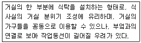

실내건축기능사 (2008-02-03 기출문제)
1과목: 실내디자인
1. 다음 설명에 알맞는 식사실의 유형은?

- 식사실 (dining, D)
- 거실 - 식사실 - 부엌 (living dining kitchen, LDK)
- 거실 - 식사실 (living dining, LD)
- 식사실 - 부엌 (dining kitchen, DK)
(정답률: 75%)

2. 다음 중 실내공간의 설계시 인체공학적 근거와 가장 거리가 먼 것은?
- 테이블의 높이
- 일반 창의 크기
- 계단의 높이
- 난간의 높이
(정답률: 93%)
3. 실내디자인을 할 때 리듬감을 주는 방법으로 가장 좋은 디자인 구성원리는?
- 대칭
- 반복
- 유사조화
- 앤센트(accent)
(정답률: 84%)
4. 주택의 조명 계획에 관한 설명으로 틀린 것은?
- 부엌은 전체조명과 국부조명을 병용하는 것이 좋다.
- 욕실은 백열등이나 연색성이 좋은 유백색 형광등 조명을 사용하며 방습형 조명기구는 사용하지 않는다.
- 침실은 주조명으로 낮은 조도의 부드러운 확산광을 쓰고 국부조명으로 스탠드를 함께 사용하는 것이 좋다.
- 펜던트는 식탁의 조명에서 국부조명으로 이용된다.
(정답률: 80%)
5. 주거공간을 주행동에 따라 개인공간, 작업공간, 사회적공간으로 분류하였을 때, 다음 중 개인공간에 속하지 않는 것은?
- 침실
- 부엌
- 서재
- 화장실
(정답률: 84%)
6. 다음 중 실내디자인의 개념과 가장 관계가 먼 것은?
- 실내디자인은 건물의 내부공간을 생활목적에 따라쓰기 쉽고 안락한 분위기의 공간이 되도록 설계하는 것이다.
- 실내디자인은 인간생활의 기능적 해결, 쾌적성 추구, 감상적 충족을 만족시켜야 한다.
- 실내디자인은 건축 및 환경관리의 상호성을 고려아혀 계획한다.
- 실내디자인은 미와 기능이 분리된 기계적 표현이다.
(정답률: 92%)
7. 실내디자인의 구성원리 중 규칙적인 요소들의 반복으로 디자인에 시각적인 질서를 부여하는 통제된 운동 감각을 의미하는것은?
- 통일
- 균형
- 강조
- 리듬
(정답률: 76%)
8. 실내공간에서 심리적인 엄숙함이나 긴장감, 상승감과 확산감의 효과를 내거나 수평적인 패턴의 지루함을 제거 내지 약화시키는데 사용되는 선의 종류는?
- 곡선
- 사선
- 수직선
- 수평선
(정답률: 85%)
9. 고대 그리스로부터 가장 균형 잡힌 아름다운 미적 비례의 전형으로 존중되어 온 황금비는?
- 1:0.314
- 1:1.414
- 1:1.618
- 1:3.141
(정답률: 89%)
10. 다음 중 창문에 느슨하게 걸려 있는 중량감 있는 커튼을 의미하는 것은?
- 글라스 커튼
- 드레이퍼리 커튼
- 드로우 커튼
- 에어 커튼
(정답률: 40%)
11. 백화점의 외벽에 창을 설치하지 않는 이유와 가장 관계가 먼 것은?
- 실내 면적 이용도가 높아진다.
- 조도를 균일하게 할 수 있다.
- 정전, 화재시 유리하다.
- 외측에 광고물의 부착 효과가 있다.
(정답률: 89%)
12. 특정한 사용목적이나 물건을 수납하기 위해 건축화된 가구를 의미하는 것은?
- 이동가구
- 유닛가구
- 붙박이가구
- 가동가구
(정답률: 74%)
13. 좁은 공간에서 시각적으로 넓어 보이게 하려면 어떤 질감(texture)의 내용을 선택하는 것이 좋은가?
- 매끈한 질감의 유리
- 굴곡이 많은 석재
- 털이 긴 카페트
- 거친 표면의 목재
(정답률: 83%)
14. 다음 중 소파(Sofa)의 종류에 속하지 않는 것은?
- 세티
- 스툴
- 카우치
- 체스터 필드
(정답률: 74%)
15. 다음의 점에 대한 설명 중 옳지 않은 것은?
- 면 또는 공간에 하나의 점이 놓여지면 주의력이 집중되는 효과가 있다.
- 점이 많은 경우에는 선이나 면으로 지각된다.
- 점의 크기가 같은 무리의 점은 동적인 면이 지각된다.
- 일직선 상에 점이 위치하면, 점은 간격에 의하여 집단으로 분리된다.
(정답률: 28%)
16. 살균 작용과 같이 인간의 건강과 깊은 관련이 있는 태양 광선은?
- 적외선
- 가시광선
- 원적외선
- 자외선
(정답률: 74%)
17. 다음 장소 중 잔향 시간이 가장 짧아야 할 곳은?
- 콘서트홀
- 카톨릭성당
- 오페라하우스
- TV 스튜디오
(정답률: 93%)
18. 겨울철 벽의 표면에 발생하는 표면결로를 방지하기 위한 방법으로 옳지 않는 것은?
- 환기에 의해 실내 절대습도를 저하한다.
- 단열 강화에 의해 실내측 표면온도를 상승시킨다.
- 실내에서 발생하는 수증기를 억제한다.
- 실내 벽의 표면온도를 실내공기의 노점온도 이하로 유지시킨다.
(정답률: 66%)
19. 다중이용시설의 실내 공기에 허용되는 이산화탄소의 기준 농도는?
- 700 ppm 이하
- 1000 ppm 이하
- 2000 ppm 이하
- 4000 ppm 이하
(정답률: 78%)
20. 인체의 온열 감각에 크게 영향을 끼치는 열 환경의 4요소에 속하지 않는 것은?
- 광도
- 기온
- 습도
- 복사열
(정답률: 62%)
2과목: 실내환경
21. 다음 중 천연 아스팔트의 종류에 속하지 않는 것은?
- 레이크 아스팔트
- 블론 아스팔트
- 록 아스팔트
- 아스팔타이트
(정답률: 74%)
22. 표준형 점토벽돌의 규격으로 옳은 것은? (단, 단위는 mm)
- 220 x 120 x 60
- 210 x 100 x 60
- 220 x 90 x 57
- 190 x 90 x 57
(정답률: 81%)
23. 흡수율이 커서 외장이나 바닥 타일로는 사용하지 않으며 실내벽체에 사용하는 타일은?
- 도기질 타일
- 석기질 타일
- 자기질 타일
- 클링커 타일
(정답률: 62%)
24. 거푸집 중에 미리 굵은 골재를 투입하여 두고, 이 간극에 모르타르를 주입하여 완성시키는 콘크리트는?
- 프리팩트 콘크리트
- 수밀 콘크리트
- 유동화 콘크리트
- 서중 콘크리트
(정답률: 70%)
25. 다음 래커의 특성에 관한 설명 중 틀린 것은?
- 건조가 매우 빠르다.
- 내후성, 내수성, 내유성이 우수하다.
- 도막이 두껍고 부착력이 좋다.
- 백화현상이 일어날 수 있다.
(정답률: 47%)
26. 우유로부터 젖산법, 산응고법 등에 의해 응고 단백질을 만든 건조분말로 내수성 및 접착력이 양호한 동물질 접착제는?
- 비닐수지 접착제
- 카세인 아교
- 페놀수지 접착제
- 알부민 아교
(정답률: 63%)
27. 금속의 부식에 대한 설명 중 옳지 않은 것은?
- 경수는 연수에 비해 부식성이 크다.
- 오수에서 발생하는 이산화탄소, 메탄가스 등은 금속을 부식시키는 촉진제의 역할을 한다.
- 산성이 강한 흙 속에서는 대부분의 금속 재료는 부식된다.
- 금속의 이온화는 부식과 관계가 있다.
(정답률: 50%)
28. 다음 발포 제품 중 현장 발포가 가능한 것은?
- 염화비닐 폼
- 폴리에틸론 폼
- 페놀 폼
- 폴리우레탄 폼
(정답률: 63%)
29. 미장재료 중 회반죽에 소요되는 재료가 아닌 것은?
- 소석회
- 모래
- 여물
- 시멘트
(정답률: 50%)
30. 다음 중 극장이나 강당, 집회장 등의 음향조절용으로 쓰이거나 일반건물의 벽 수장재로 이용되는 목재 제품은?
- 플로링 보드
- 파키트 패널
- 코펜하겐 리브
- 펄라이트
(정답률: 83%)
3과목: 실내건축재료
31. 다음 중 고로시멘트에 대한 설명으로 옳지 않은 것은?
- 포틀랜드시멘트에 고로슬래그분말을 혼합하여 만든 것이다.
- 해수에 대한 내식성이 크다.
- 초기강도는 작으나 장기강도는 크다.
- 응결시간이 빠르고 콘크리트 블리딩량이 많다.
(정답률: 52%)
32. 20세기의 새로운 건축의 모체가 된 3가지 재료는?
- 벽돌, 블록, 시멘트
- 목재, 석재, 도장재
- 강재, 유리, 시멘트
- 철근, 시멘트, 섬유
(정답률: 44%)
33. 다음 중 복층유리에 대한 설명으로 옳지 않은 것은?
- 현장에서 절단 가공을 할 수 없다.
- 판유리 사이의 내부에는 단열재를 삽입한다.
- 방음, 단열 효과가 크다.
- 결로 방지용으로 효과가 우수하다.
(정답률: 56%)
34. 경화 콘크리트의 성질에 대한 설명으로 옳지 않은 것은?
- 내화, 내수적이다.
- 강재와의 접착이 잘 되고 방청력이 크다.
- 인장강도가 가장 크며 콘크리트의 역학적 기능을 대표한다.
- 물시멘트비는 경화한 콘크리트의 강도에 영향을 주는 요인이다.
(정답률: 75%)
35. 암석 특유의 천연적으로 갈라진 금을 말하며, 모든 암석에 있으나 특히 화성암에서 심하게 나타나는 것은?
- 선상조직
- 절리
- 결정질
- 입상조직
(정답률: 55%)
36. 다음 중 목구조의 이음 및 맞춤 부분에 쓰이는 보강 철물이 아닌 것은?
- 안장쇠
- 감잡이쇠
- 리벳
- 듀벨
(정답률: 58%)
37. 다음 중 콘크리트 성질을 개선하거나 경제성 향상의 목적으로 사용되는 혼화제가 아닌 것은?
- AE제
- 기포제
- 유동화제
- 플라이애시
(정답률: 52%)
38. 다음의 석재 가공순서 중 가장 나중에 하는 것은?
- 혹두기
- 정다듬
- 잔다듬
- 물갈기
(정답률: 83%)
39. 합성수지계 재료 중 우수한 투명성, 내후성을 활용하여 톱라이트, 온수 풀의 옥상, 아케이드 등에 유리의 대용품으로 사용되는 것은?
- 폴리카보네이트
- 선상폴리아미드 수지
- 폴리판 수지
- 폴리에틸렌 수지
(정답률: 53%)
40. 일반적으로 통용되는 목재의 진비중은?
- 0.31
- 0.61
- 1.00
- 1.54
(정답률: 58%)
41. 건축제도의 치수기입에 대한 설명 중 틀린 것은?
- 인출선은 사용하지 않는다.
- 치수선 중앙 윗부분에 기입하는 것이 원칙이다.
- 치수는 특별히 명시하지 않는 한 마무리 치수로 표시한다.
- 치수 기입은 치수선에 평행하게 도면의 왼쪽에서 오른쪽으로, 아래로부터 위로 읽을 수 있도록 기입한다.
(정답률: 77%)
42. 건축제도에서 선긋기에 대한 설명 중 잘못된 것은?
- 일점 쇄선의 점부분은 점이 아닌 선으로 긋는다.
- 일정한 힘과 속도로 선긋기를 완성한다.
- 일점 쇄선과 파선은 간격이 일정하게 한다.
- 연필은 진행되는 방향으로 약간 기울여서 그린다.
(정답률: 52%)
43. 다음 중 보강블록구조에서 테두리보를 설치하는 목적과 가장 관계가 먼 것은?
- 하중을 직접 받는 블록을 보강한다.
- 분산된 내력벽을 일체로 연결하여 하중을 균등히 분포시킨다.
- 횡력에 대한 벽면의 직각방향의 이동으로 인해 발생하는 수직 균열을 막는다.
- 가로철근의 끝을 정착시킨다.
(정답률: 56%)
44. 셸구조가 성립하기 위한 제한 조건으로 틀린 것은?
- 건축 기술상 셸은 건축할 수 있는 형태를 가져야한다.
- 공장, 건축 현장에서 용이하게 만들어지는 것이어야 한다.
- 역학적인 면에서 재하 방법이 지지 능력과 어긋나지 않아야 한다.
- 지지점에서는 힘의 집중이 발생하지 않으므로 셸의 모양을 결정할 때 지지점과의 관계를 고려하지 않는다.
(정답률: 75%)
45. 목구조에 대한 설명 중 옳지 않은 것은?
- 비교적 소규모 건축물에 적합하다.
- 연소하기 쉽다.
- 목재는 비중에 비해 강도가 작다.
- 친화감이 있고 미려하다.
(정답률: 78%)
46. 목구조에서 가로재와 세로재가 직교하는 모서리부분에 직각이 변하지 않도록 보강하는 철물은?
- 감잡이쇠
- ㄱ자쇠
- 띠쇠
- 안장쇠
(정답률: 71%)
47. 콘크리트구조에 사용되는 강재 거푸집에 대한 설명으로 옳지 않은 것은?
- 콘크리트 표면이 매끄럽다.
- 콘크리트 오염이 없다.
- 강도가 강하다.
- 변형이 없다.
(정답률: 37%)
48. 건축제도에 사용되는 삼각자에 대한 설명으로 옳지 않은 것은?
- 일반적으로 45˚ 등변 삼각형과 30˚ , 60˚ 의 직각삼각형 두가지가 한쌍으로 이루어져 있다.
- 재질은 플라스틱 제품이 많이 사용된다.
- 제도에서는 눈금이 있는 자를 주로 이용한다.
- 크기에 따라 몇 가지 종류로 구분된다.
(정답률: 69%)
49. 다음의 각종 구조에 대한 설명 중 옳지 않은 것은?
- 목구조는 시공이 용이하며, 공사기간이 짧다.
- 벽돌구조는 횡력에는 강하나 대규모 건물에는 부적합하다.
- 철큰콘크리트구조는 내구, 내화, 내진적이다.
- 철골구조는 고층이나 간사이가 큰 대규모 건축물에 적합하다.
(정답률: 72%)
50. 다음 중 건축 구조의 기본 조건과 가장 거리가 먼 것은?
- 유동성
- 안정성
- 경제성
- 내구성
(정답률: 64%)
4과목: 건축일반
51. 다음 중 불완전 용접에 속하지 않는 것은?
- 언더컷 (undercut)
- 오버랩(overlap)
- 피트(pit)
- 피치(pitch)
(정답률: 53%)
52. 벽돌벽 쌓기법 중 한 켜는 길이쌓기로 하고 다음은 마구리 쌓기로 하며 모서리 또는 끝에서 칠오토막을 사용하는 것은?
- 네덜란드식 쌓기
- 프랑스식 쌓기
- 미국식 쌓기
- 영롱 쌓기
(정답률: 63%)
53. 건축물의 주요 구성 요소 중 건축물의 상부와 하부를 구획하는 수평 구조체로, 자체의 하중과 적재된 하중을 받아 보나 기둥에 전달하는 역할을 하는 것은?
- 기초
- 바닥
- 계단
- 수장
(정답률: 49%)
54. 철근콘크리트구조에 대한 설명으로 옳지 않은 것은?
- 콘크리트는 철근이 녹스는 것을 방지한다.
- 콘크리트와 철근이 강력히 부착되면 철근의 좌굴이 방지된다.
- 콘크리트와 철근은 선팽창 계수가 거의 같다.
- 압축강도가 큰 콘크리트일수록 철근과의 부착력은 작아진다.
(정답률: 62%)
55. 조립식 구조에 대한 설명 중 틀린 것은?
- 대량생산이 가능하다.
- 공사기간을 단축할 수 있다.
- 변화 있고 다양한 외형을 구성하는데 적합하다.
- 현장작업이 간편하므로 나쁜 기후조건을 극복할 수 있다.
(정답률: 71%)
56. 제도에서 사용하는 선에 관한 설명 중 틀린 것은?
- 이점 쇄선은 물체의 절단한 위치를 표시하거나 경계선으로 사용한다.
- 가는 실선은 치수선, 치수보조선, 격자선 등을 표시할 때 사용한다.
- 일점 쇄선은 중심선, 참고선 등을 표시할 때 사용한다.
- 굵은 실선은 단면의 윤곽 표시에 사용한다.
(정답률: 76%)
57. 다음 중 철골구조의 보에 대한 설명으로 옳지 않은 것은?
- 플레이트보에서 웨브의 국부 좌굴을 방지하기 위해 거싯플레이트를 사용한다.
- 형강보는 현장 조립이 신속하며 다른 철골구조보다 재료가 절약되어 경제적이다.
- 하이브리드거더는 다른 성질의 재질을 혼성하여 만든 일종의 조립보이다.
- 플랜지는 H형강, 플레이트보 또는 래티스보 등에서 보의 단면의 상하에 날개처럼 내민 부분을 말한다.
(정답률: 52%)
58. 다음의 각종 설계도면에 대한 설명 중 옳지 않은 것은?
- 계획 설계도에는 구상도, 조직도, 동선도 등이 있다.
- 기초 평면도의 축척은 평면도와 같게 한다.
- 단면도는 건축물을 각 층마다 창틀 위에서 수평으로 자른 수평투상도로서, 실의 배치 및 크기를 나타낸다.
- 전개도는 건물 내부의 입면을 정면에서 바라보고 그리는 내부 입면도이다.
(정답률: 71%)
59. 다음 중 건식구조에 속하는 것은?
- 나무구조
- 블록구조
- 벽돌구조
- 철근콘크리트구조
(정답률: 73%)
60. 다음 중 철골구조의 주각부에 사용되는 부재가 아닌 것은?
- 래티스(lattice)
- 베이스 플레이트(base plate)
- 사이드 앵글(side angle)
- 윙 프렐이트(wing plate)
(정답률: 49%)